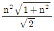
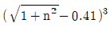
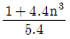
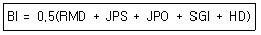
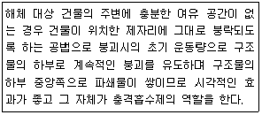
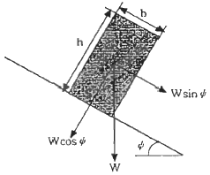
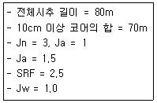
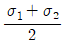
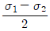

화약류관리기사 (2011-03-20 기출문제)
1과목: 일반화약학
1. 화약류의 파괴효과(동적효과)를 측정하는 시험방법은?
- Hess 맹도시험
- Trauzle 연주시험
- 낙추시험
- 유리산시험
(정답률: 90%)

2. 부동교질 다이너마이트를 제조할 때 NG의 20~25% 정도를 무엇으로 치환하는가?
- nitroglycol
- ethylene glycol
- glycerol
- ethanol
(정답률: 86%)
3. 함수폭약의 성질에 대한 설명으로 틀린 것은?
- 충격ㆍ마찰에 대하여 다른 폭약보다 안전하다.
- 열ㆍ화염에 대하여 예민하다.
- 내수ㆍ내습성이 양호하다.
- 후 가스는 다이너마이트보다 양호하다.
(정답률: 82%)
4. 뇌관과 폭약포를 장축에 따라 일직선상에 놓고 뇌관의 폭굉에 의하여 폭약포의 감응 순폭하는 최대거리를 측정하는 시험은?
- 가트만 시험
- 강판시험
- 뇌관 감응시험
- 갱도시험
(정답률: 84%)
5. 목분 1kg을 연소시킬 때 961L의 산소가 부족하여 산소공급제로 KNO3를 사용하였다. 이 때 산소균형을 위한 질산칼륨은 약 몇 kg이 필요한가? (단, K의 원자량은 39이고, KNO3 1kg당 산소발생 양은 277L이다.)
- 1.5
- 3.5
- 4.5
- 5.5
(정답률: 90%)
6. 산업용 뇌관의 첨장약으로 사용되지 않은 것은?
- 헥소겐
- 펜트리트
- 테트릴
- 니트로글리세린
(정답률: 78%)
7. 기폭약으로 사용되지 않는 화약은?
- Hg(ONC)2
- Pb(N3)2
- C6H5N(CH3)2
- C6H2(NO2)2ON2
(정답률: 59%)
8. 다음 중 폐약처리시 NaOH 수용액을 사용할 수 없는 것은?
- 뇌홍
- 아지화납
- DDNP
- 테트라센
(정답률: 67%)
9. 질산암모늄 유제폭약에 대한 설명 중 틀린 것은?
- 예감제가 들어있지 않다.
- 장기저장이 쉽고 습도가 높은 곳에서 사용할 수 있다.
- 공업용 뇌관 1개만으로는 기폭할 수 없다.
- 주성분은 질산암모늄과 경유이다.
(정답률: 83%)
10. 직경이 5.0cm인 폭약을 감도시험 할 때 A약포와 B약포의 간격을 최대 30cm로 하였더니 A약포의 폭발에 감응되어 B약포가 폭발하였다. 이 때의 순폭도는?
- 6
- 15
- 25
- 35
(정답률: 89%)
11. 한국산업표준(KS)에서 정한 도화선 품질 시험 항목이 아닌 것은?
- 점화력
- 내수성
- 연소초시
- 발화점
(정답률: 74%)
12. 니트로글리세린과 니트로셀룰로오스의 콜로이드화가 진행되면 내부의 기포가 없어져서 다이너마이트가 둔감하게 되고 폭발이 어렵게 되는 현상을 의미하는 것은?
- 고화(Caking)현상
- 노화(Aging)현상
- 사압현상
- 흡습현상
(정답률: 79%)
13. 화약의 맹도를 측정하는 시험은?
- 도트리쉬법
- 메테강법
- 이온갭법
- 캐스트법
(정답률: 62%)
14. 폭발가공법에 대한 설명으로 틀린 것은?
- 폭발성형은 폭발압력을 이용하여 금속판을 성형가공 하는 방법이다.
- 폭발접합은 폭발력을 이용하여 2개의 금속판을 접합시키는 것이다.
- 폭발확관은 파이프류 폭발력을 이용하여 체결하는 것이다.
- 폭발경화는 폭발에너지를 이용하여 금속분말 등을 압착 결합시키는 방법이다.
(정답률: 58%)
15. 도트리쉬법에 의해 함수폭약의 폭속을 측정하였을 때의 폭속은 몇 m/s인가? (단, 표준 도폭선의 폭속 5600m/s, 도폭선의 중심과 폭발 혼적간의 거리는 8cm이고, 폭약 2점간의 거리는 10cm이다.)
- 4200
- 4000
- 3700
- 3500
(정답률: 74%)
16. 1g 당 산소 과부족량이 +0.035g인 화약은?
- 질산칼륨
- 질산암모늄
- 니트로글리세린
- 니트로글리콜
(정답률: 85%)
17. DDNP 합성의 주원료로 맞는 것은?
- sodium azide
- 테트라센
- 트리시네이트
- 피크린산
(정답률: 62%)
18. 뇌관에 관한 설명으로 틀린 것은?
- 뇌관의 관체는 주로 알루미늄이나 구리로 만든다.
- 뇌홍뇌관은 뇌홍이나 뇌홍폭분을 관체에 넣은 것이다.
- 구리뇌관은 탄광이나 금속광산이나 모두 사용할 수 있다.
- 알루미늄 뇌관은 기폭약으로서 질산암모늄이 사용된다.
(정답률: 67%)
19. 피크린산에 대한 설명으로 옳지 않은 것은?
- 2.4.6 - trinitrophenol이다.
- 클로로벤젠을 원료로 제조할 수 있다.
- 단맛이 나는 액체상태이다.
- 알코올에 녹는다.
(정답률: 67%)
20. 면약과 혼합하여 겔화(교화)하는 것으로 쓰이는 것은?
- 소금
- 목분
- 니트로글리세린
- 질산암모늄
(정답률: 74%)
2과목: 발파공학
21. 대발파를 하는 경우 사전에 검토해야 할 사항에 해당하지 않는 것은?
- 당해 지역의 지형, 암질
- 사용하고자 하는 폭약의 종류
- 약실의 위치, 대피장소
- 불발된 폭약과 뇌관의 회수 및 처리방법
(정답률: 34%)
22. 다음 중 전색물의 구비조건으로 옳지 않은 것은?
- 발파공벽과의 마찰이 적어서 단단하게 다져질 수 있는 것
- 틈새를 쉽게, 그리고 빨리 메울 수 있는 것
- 재료의 구입과 운반이 쉽고 값이 싼 것
- 압축률이 작지 않고, 연소되지 않는 것
(정답률: 27%)
23. 다음 중 발파비산의 방지대책으로 옳지 않은 것은?
- 약장약을 피하고 기폭방법에서 정기폭보다 역기폭을 사용한다.
- 공발이 발생하지 않도록 전색을 충분히 한다.
- 천공오차를 줄여 국부적인 장약공의 집중을 피한다.
- 암석의 자유면 또는 비석을 방지하고 싶은 방향 쪽의 암반 위에 blasting mat 등의 방호구를 덮는다.
(정답률: 14%)
24. 다음 중 발파계수(C)에 대한 설명으로 옳지 않은 것은?
- 발파계수는 발파 대상 암석의 어떤 부피를 발파하는데 필요한 장약량을 결정하는 계수이다.
- 발파계수는 암석항력계수, 폭약위력계수, 진색계수의 곱(C=gㆍeㆍd)으로 나타난다.
- 폭약위력계수(c)는 NG 90%의 다이너마이트를 표준으로 해서 기타 폭약의 위력을 비교하는 계수이다.
- 전색계수(d)는 폭약을 천공 내에 장전하고 구멍을 모래 등으로 메꾸는 정도에 따라 달라지는 계수로 불완전 전색의 경우 전색계수 값은 1보다 크다.
(정답률: 38%)
25. 다음 중 비전기식 뇌관에 대한 설명으로 옳지 않은 것은?
- 지발전기뇌관과 도폭선 시스템의 장점을 택하여 조합한 형식이다.
- 뇌관 내부에 연시장치를 가지고 있으며 양호한 초시 정밀도로 지발발파를 할 수 있다.
- 전기발파와 같이 결선상태를 도통시험기나 저항시험기로 확인할 수 없다.
- 결선작업이 복잡하고, 작업능률이 떨어진다.
(정답률: 30%)
26. 발파작업장에서 착암기 1대를 가동하였을 때 음압레벨이 72dB이었다. 동일한 음압레벨을 갖는 착암기 10대를 동시에 가동한다면 합성음압레벨은 얼마인가?
- 75dB
- 79dB
- 82dB
- 86dB
(정답률: 28%)
27. 발파작업표준안전작업지침(고용노동부 고시 제2001-17호)에서 제시한 발파구간 인접구조물에 대한 피해 및 손상을 예방하기 위한 기준 중 상가(금이 없는 상태)의 허용진동치는 얼마인가? (단, 건울기초에서의 허용진동치)
- 1.0~4.0cm/sec
- 1.0cm/sec
- 0.5cm/sec
- 0.2cm/sec
(정답률: 40%)
28. 수직천공과 비교시 경사천공의 장점으로 옳지 않은 것은?
- 느슨한 암석의 자유면 보호에 유리
- 1자유면에서의 문제성 감소
- 낮은 계단발파에서 근거리 비산
- 자유면 반대방향의 후면파괴영역이 감소
(정답률: 9%)
29. 다음 누두지수의 함수 f(n)을 나타내는 식 중에서 Hauser의 제안식은 어느 것인가?



- n3
(정답률: 42%)
30. 다음은 Lilly의 발파지수(Bl, Blastibility index)를 나타내는 식이다. 이 식에서 JOP가 의미하는 것은?

- 절리의 수
- 절리의 간격
- 절리의 방향
- 절리의 거칠기
(정답률: 29%)
31. 다음 중 터널발파시 사용되는 경사공 심빼기와 평행공 심빼기에 대한 설명으로 옳지 않은 것은?
- 경사공 심빼기는 터널 단면이 크지 않고, 장공 천공을 위한 장비 투입이 어려운 경우에 많이 사용된다.
- 경사공 심빼기의 경우 장약량이 많거나 폭약의 위력이 너무 강하면 파쇄된 암석이 막장면으로 밀려나오지 않고 소결현상을 일으켜 발파를 실패할 수 있다.
- 평행공 심빼기는 장공 천공이 가능하여 1회 굴진 거리를 경사공 심빼기보다 크게 할 수 있다.
- 평행공 심빼기의 경우 파석의 비산거리가 비교적 적고 막장 부근에 집중되므로 파석처리가 편리하다.
(정답률: 25%)
32. 벤치발파시 파쇄입도는 암반이 균일할수록 보다 쉽게 필요로 하는 입도를 얻을 수 있다. 다음 중 큰 파쇄입도를 얻기 위한 방법으로 가장 적당한 것은?
- 상부장약을 증가시킨다.
- 최소저항선을 천공간격보다 아주 작게 한다.
- 지발발파를 실시한다.
- 1회당 1열씩 기폭시킨다.
(정답률: 39%)
33. 다음 수중천공발파 설계 중 옳지 않은 것은?
- 장약작업의 불확실성을 고려하여 경사공의 경우 수직공보다 0.1kg/m3의 바장약량을 증가시킨다.
- 진흙으로 암반이 덮여있는 경우, 진흙층의 두께 m당 0.02kg/m3의 비장약량을 증가시킨다.
- 암석층을 보정하기 위해서 계단높이 m당 0.03kg/m3의 비장약량을 증가시킨다.
- 수압을 보정하기 위해서 수심 m당 0.01kg/m3의 비장약량을 증가시킨다.
(정답률: 27%)
34. 전기뇌관 총 120개 중 30개씩 직렬결선하고, 이것을 다시 4열 병렬결선하여 직ㆍ병렬 발파를 실시하려고 한다. 소요전압을 얼마인가? (단, 전기뇌관 1개의 저항 1.5[Ω], 발파모선 저항 0.02[Ω/m], 총길이 200m, 발파기 내부저항 0, 소요전류 2[A])
- 100 [V]
- 110 [V]
- 115 [V]
- 122 [V]
(정답률: 32%)
35. 높이 9m인 벤치에서 공경 76mm인 발파공으로 Trim Blasting을 실시하려고 한다. 적정 장약밀도는 얼마인가?
- 85.3g/m
- 168.8g/m
- 481.3g/m
- 867.0g/m
(정답률: 32%)
36. 다음 중 측벽효과(channel effect)에 관한 설명으로 옳은 것은?
- 주로 밀폐장전시 발생한다.
- 디커플링지수가 1일 경우 일어나는 현상이다.
- 공기중을 통해 가는 느린 충격파가 폭약속의 충격파를 방해하기 때문에 발생한다.
- 철관으로 시험발파할 때 동일 철관 직경에서 약경이 커질수록 쉽게 발생한다.
(정답률: 28%)
37. 공경 35mm인 발파공 5공을 집중발파하였을 때 저항선의 비가 2.29라면 발파공의 공간격은 얼마인가? (단, 장약길이는 구멍지름의 12배로 한다.)
- 5cm
- 10cm
- 15cm
- 20cm
(정답률: 28%)
38. 발파작업시 위험구역안의 통행을 막기 위해서 경계원을 배치하게 되는데, 경계원에게 확인시켜야 하는 사항으로 옳지 않은 것은?
- 경계하는 구역
- 경계하는 위치
- 발파횟수
- 사용 폭약량
(정답률: 40%)
39. 계단높이 10m, 계단의 폭 20m, 상대암석계수 0.4kg/m3인 암반에 천공경 75mm로 수직 하향 천공하고, 에멀젼폭약(장전밀도 1.⑤kg/ℓ)을 사용하여 질발발파르 설계할 때 공저장약량은 얼마안가? (단, 계단의 폭 좌우는 수평방향으로 구속되어 있으며, 계단폭 좌우에 천공한다.)
- 17.9kg
- 21.5kg
- 24.9kg
- 27.4kg
(정답률: 8%)
40. 다음과 같은 특징을 갖는 발파해체공법은 무엇인가?

- 전도공법(Felling)
- 단축붕괴공법(Telescoping)
- 상부붕락공법(Toppling)
- 점진붕괴공법(Progressive Collapse)
(정답률: 16%)
3과목: 암석역학
41. 직경 54mm, 길이 10cm인 원주형 시험편을 사용하여 직경방향 점하중강도시험(point load strength test)을 실시하였더니 970kg에서 파괴되었다. 추정 일축압축강도는 얼마인가?
- 622kg/cm2
- 735kg/cm2
- 827kg/cm2
- 970kg/cm2
(정답률: 15%)
42. 암반분류 방법 중 RMR과 Q 분류법에 대한 설명으로 옳지 않은 것은?
- 암질지수는 두 방법 모두에서 평가요소중의 하나이다.
- RMR에서는 암석의 일축압축강도 요소가 평가되며, Q분류법에서는 암석의 전단강도 관련 요소가 평가된다.
- Q 분류법에서의 단점은 응력조건을 고려할 수 없다는 것이다.
- RMR에서 불연속면의 방향성은 기본점수에 포함되지 않는다.
(정답률: 18%)
43. 일축압축강도가 1000kg/cm2인 암석에 대해 봉압이 40kg/cm2인 삼축압축시험에서 얻어진 파괴강도는 1100kg/cm2였다. 이 경우 무결암(Intac rock)에 대한 Hoek-Brown 상수 m의 값은 얼마인가?
- 0.87
- 1.42
- 2.15
- 3.09
(정답률: 0%)
44. 서울 화강암의 탄성파 전파속도를 측정한 결과 P파가 3200m/sec, S파가 1700m/sec였다. 이 때 암석의 비중이 2.5이라면 암석의 동포아송비(νd)는 얼마인가?
- 0.20
- 0.25
- 0.30
- 0.35
(정답률: 20%)
45. 암석에 적당한 하중을 가하고 그대로 하중을 일정하게 유지하면 어느 정도 시간이 경과한 후에 파괴가 일어나는 현상을 무엇이라 하는가?
- 피로파괴
- 히스테리시스
- 지연파괴
- 소성파괴
(정답률: 28%)
46. 암반의 변형특성에 대한 설명으로 옳지 않은 것은?
- 암반의 변형특성은 암반내에 존재하는 불연속면의 성질 등에 의해 좌우된다.
- 암반은 풍화가 될 수록 탄성계수가 저하된다.
- 암반은 공극률이 커질수록 변형계수는 커진다.
- 암반은 절리 간격이 작을수록 전단강도는 저하된다.
(정답률: 40%)
47. 다음 그림과 같이 경사면 상부에 암석 블록이 놓여있을 때, 점착력을 무시하고 마찰력에 의해서만 블록이 지지된다고 가정하면 이 암석 블록이 안정하기 위한 조건은 무엇인가? (단, 암석 블록의 높이와 폭은 각각 h, b이고, 블록저면과 사면의 마찰각은 ø, 그리고 사면 경사각은 Ψ이다.)

- Ψ＜ø, b/h＜tanΨ
- Ψ＜ø. b/h＞tanΨ
- Ψ＞ø. b/h＜tanΨ
- Ψ＞ø. b/h＞tanΨ
(정답률: 30%)
48. 다음 중 암반의 변형계수(deformation modulus)를 측정할 수 있는 현장시험에 해당하지 않는 것은?
- 평판재하시험
- Goodman 잭 시험
- 공내팽창계 시험
- 수압파쇄시험
(정답률: 34%)
49. 다음 중 국제암반역학회(lSRM)에서 제안한 일축압축강도시험을 위한 조건을 만족하지 못한 것은?
- 시험편의 종횡비(L/D):3.0
- 시험편의 직경:75mm
- 시험편의 양단면의 평평도:0.01m
- 시험편에 대한 재하속도:5MPa/s
(정답률: 15%)
50. 암석 시험편의 체적이 300cm3, 완전 건조 질량은 750g, 완전 포화 질량은 765g인 경우 흡수율은 얼마인가?
- 2%
- 3%
- 4%
- 5%
(정답률: 25%)
51. 절리면 전단시험시 시험편의 전단거동특성에 대한 설명으로 옳지 않은 것은?
- 절리면의 거칠기 정도가 클수록 전단강도는 커진다.
- 절리면이 분리되어 있는 경우 점착력은 0에 가깝다.
- 절리면에 적용하는 법선응력이 클수록 전단강도는 작아진다.
- 절리면의 최대마찰각은 보통 잔루마찰각보다 크다.
(정답률: 27%)
52. Q-system의 평가요소에 대하여 다음과 같은 결과를 얻었다. RMR값을 구하고, RMR에 의한 암반등급은 무엇인가? (단, RMR과 Q의 관계식은 Bieniawski(1976)의 제안식을 이용한다.)

- 53.0, 양호
- 53.0, 우수
- 63.5, 우수
- 63.5, 매우 우수
(정답률: 34%)
53. Mohr 응력원에 대한 설명으로 옳지 않은 것은?
- σ-γ축에서는 원의 중심은

이다. - σ-γ축에서는 원의 반지름은

이다. - σ축의 2개의 절편(σ1, σ2)은 각각 최대, 최소주응력이다.
- 최대전단응력 τmax는 원의 반지름의 2배와 같다.
(정답률: 42%)
54. σx=100kg/cm2, σy=70kg/cm2, σz=40kg/cm2를 받고 있는 삼축응력상태에서 x방향 편차변형률이 5×10-5일 때, 강성률 G는 얼마인가?
- 3×105 kg/cm2
- 4×105 kg/cm2
- 5×105 kg/cm2
- 6×105 kg/cm2
(정답률: 20%)
55. 직경 50mm, 길이 300mm인 원주형 시험편에 대해 4점 휨시험을 실시한 결과 3kN에서 파괴가 발생하였다. 인장강도(휨강도)는 얼마인가? (단, 양 지정간의 거리는 240mm이다.)
- 9.8MPa
- 12.2MPa
- 14.7MPa
- 18.3MPa
(정답률: 8%)
56. 다음 중 완전 탄성체의 성질이 아닌 것은?
- 응력과 변형률이 선형관계를 이룬다.
- 일정한 응력이 가해질 때 발생하는 변형량이 시간에 비례한다.
- 힘을 가하였다가 제거하면 본래의 변위(형태)로 되돌아온다.
- 영률이 측정방향에 상관없이 일정하다.
(정답률: 34%)
57. 다음 중 중간주응력을 고려한 암석파괴이론은?
- Mohr-Coulomb 이론
- Von Moses 이론
- Hoek-Brown 이론
- Tresca 이론
(정답률: 34%)
58. 지반을 개개의 강성 블록으로 모델링하고 불연속면에서의 변위가 블록 자체의 변형보다 대단히 큰 경우 효과적으로 적용할 수 있는 수치해석법은?
- 개별요소법
- 유한차분법
- 유한요소법
- 경계요소법
(정답률: 27%)
59. 일축압축시험 시 발생하는 마찰효과(end effect)에 대한 설명으로 옳지 않은 것은?
- 시험편과 가압판 간의 마찰 및 탄성계수의 차이로 인해 발생한다.
- 마찰효과에 의해 시험편과 가압판의 접촉부에 전당응력이 발생한다.
- 마찰효과의 영향을 최소화하기 위해서는 시험편의 길이/직경 비를 2 이상으로 하여야 한다.
- 마찰효과에 의해 시험편의 일축압축강도가 감소하는 효과가 나타난다.
(정답률: 6%)
60. 지표지질 조사로부터 N70° W 주향과 60° NE의 경사를 갖는 주절리군이 조사되었다. 다음 중 이 절리군을 경사/경사방향으로 올바르게 표시한 것은?
- 60/020
- 60/110
- 60/160
- 60/200
(정답률: 25%)
4과목: 화약류 안전관리 관계 법규
61. 화약류를 발파 또는 연소시키려는 사람이 행정안전부령이 정하는 바에 의하여 화약류의 사용지률 관찰하는 경찰서장의 화약류의 사용허가를 받지 않고 발파 또는 연소한 경우 처벌규정으로 옳은 것은?
- 10년 이하의 징역 또는 2천만원 이하의 벌금
- 5년 이하의 징역 또는 1천만원 이하의 벌금
- 2년 이하의 징역 또는 500만원 이하의 벌금
- 300만원 이하의 과태료처분
(정답률: 34%)
62. 재해의 예방상 필요하다고 인정되는 때에 화약류의 소유자에게 안정도시험을 실시하도록 명할 수 있는 사람은?
- 행정안전부장관
- 시ㆍ도지사
- 지방경찰청장
- 경찰서장
(정답률: 43%)
63. 피뢰장치의 위치ㆍ형식ㆍ구조 및 재료 등의 기준 중 피보호건물의 상단으로부터 돌침의 상단까지의 높이는 최소 몇 m 이상으로 하여야 하는가?
- 10m 이상
- 5m 이상
- 3m 이상
- 2.5m 이상
(정답률: 27%)
64. 허가를 받지 않고 양수할 수 있는 화약류의 수량으로 옳은 것은?
- 전기뇌관 1일 100개 이하
- 수렵용 실탄 또는 공포탄 1일 100개 이하
- 사격용 실탄 1일 300개 이하
- 도폭선 1일 100m 이하
(정답률: 24%)
65. 다음 중 화약류 운반방법의 기술상의 기준으로 옳은 것은?
- 디아조디니트로페놀을 주로 하는 기폭약은 수분 또는 알코올분이 23% 정도 머금은 상태로 운반해야 한다.
- 뇌홍을 주로 하는 기폭약은 수분 또는 알코올분이 20% 정도 머금은 상태로 운반해야 한다.
- 펜타에리스릿트는 수분 또는 알코올분이 15% 정도 머금은 상태로 운반해야 한다.
- 니트로셀룰로오스는 수분 또는 알코올분이 25% 정도 머금은 상태로 운반해야 한다.
(정답률: 48%)
66. 화약류 취급소의 정체량으로 옳지 않은 것은? (단, 1일 사용예정량 이하)
- 화약 300kg 이하
- 폭약(초유폭약 제외) 150kg 이하
- 전기뇌관 3,000개 이하
- 도폭선 6km 이하
(정답률: 38%)
67. 화약류 저장소가 보안거리 미달로 보안물건을 침범했을 경우 행정처분기준으로 맞는 것은?
- 허가취소
- 6월 효력정지
- 3월 효력정지
- 감량 또는 이전명령
(정답률: 42%)
68. 다음 중 사용허가를 받지 아니하고 건축ㆍ토목공사 또는 산업용으로 1일 동일한 장소에서 사용할 수 있는 화약류의 수량으로 옳은 것은?
- 건설용 타정총용 공포탄 1만개 이하
- 미진동파쇄기 150개 이하
- 폭발병 1천개 이하
- 폭발천공기 100개 이하
(정답률: 19%)
69. 화약류 1급저장소에 폭약 40톤을 저장하고자 할 때 저장소와 보안물건 간의 보안거리로 옳은 것은? (단, 보안물건은 철도이다.)
- 270m 이상
- 250m 이상
- 230m 이상
- 210m 이상
(정답률: 29%)
70. 다음 중 폭약 1톤에 해당하는 화공품의 수량으로 옳은 것은?
- 신관 또는 회관:5만개
- 실탄 또는 공포탄:100만개
- 총용뇌관:200만개
- 도폭선:100km
(정답률: 43%)
71. 화약류 제조시설의 기준 중 제조소의 위험구역 안에서 화약류를 운반하는 운반용차로 사용할 수 없는 것은?
- 디젤차
- 축전지차
- 전기기관차
- 손수레
(정답률: 36%)
72. 꽃불류 사용의 기술상의 기준으로 옳은 것은?
- 풍속이 초당 10m 이상일 때에는 꽃불류의 사용을 중지해야 한다.
- 꽃불류를 발사통 안에 넣는 때에는 압축공기를 이용하여 서서히 넣는다.
- 쏘아 올린 꽃불류는 30m 이상의 높이에서 퍼지도록 해야 한다.
- 불발된 꽃불류를 회수할 때에는 발사통에 많은 양의 물을 넣고 20분 이상 경과한 후에 회수한다.
(정답률: 29%)
73. 초유폭약(ANFO)에 의한 발파의 기술상의 기준으로 옳지 않은 것은?
- 금이 가고 틈이 벌어지거나 공동이 있는 천공된 구멍에는 장약하는 일이 없도록 할 것
- 장전기는 장전작업 중에 발생하는 정전기가 소산할 수 있도록 땅에 닿게 할 것
- 가연성 가스가 0.5% 이상이 되는 장소에서는 발파하지 아니할 것
- 불발된 천공된 구멍으로부터 초유폭약 또는 메지 등을 제거하는 때에는 압축공기를 사용하지 아니할 것
(정답률: 40%)
74. 지하 1급 화약류저장소에 폭약 25톤을 저장할 때 지반의 두께기준은?
- 18m 이상
- 20m 이상
- 22m 이상
- 24m 이상
(정답률: 20%)
75. 지상에 설치하는 2급 저장소의 위치ㆍ구조 및 설비의 기준으로 옳지 않은 것은?
- 건물은 벽돌조 이상의 견고한 단층건물로 할 것
- 출입문은 2중문으로 하고 덧문에는 두께 2mm 이상의 철판으로 보강하고 2개 이상의 자물쇠 장치를 할 것
- 저장소 주위에는 흙둑을 쌓을 것
- 햇빛이 잘 들도록 3개 이상의 창을 설치하되, 저장소의 기초로부터 2m 이상의 높이를 둘 것
(정답률: 36%)
76. 다음 중 운반신고를 하지 아니하고 운반할 수 있는 화약휴의 종류 및 수량으로 옳지 않은 것은?
- 폭발 천공기 600개
- 장난감용꽃불류 500kg
- 폭약 15kg
- 미진동파쇄기 5000개
(정답률: 24%)
77. 다음 중 화약류관리보안책임자의 면허를 받을 수 있는 사람은?
- 20세 미만인 사람
- 색맹 또는 색약인 사람
- 손가락이 4개 절단된 사람
- 말을 할 수 있으나 듣지 못하는 사람
(정답률: 28%)
78. 미진동파쇄기를 수입할 때는 누구의 허가를 받아야 하는가?
- 경찰서장
- 지방경찰청장
- 경찰청장
- 행정안전부장관
(정답률: 24%)
79. 다음 중 폭약과 비슷한 파괴적 폭발에 사용될 수 있는 것으로서 대통령령이 정하는 것에 해당하지 않는 것은?
- 폭발의 용도에 사용되는 질산요소 또는 이를 주성분으로 하는 폭약
- 디아조디니트로페놀 또는 무수규산 65퍼센트 이상을 함유한 폭약
- 함수폭약
- 면약(질소함량이 12.2퍼센트 이상의 것에 한한다.)
(정답률: 34%)
80. 간이흙둑의 설치 기준에 대한 설명으로 옳지 않은 것은?
- 간이흙둑의 경사는 75도 이하로 하여야 한다.
- 꽃불류저장소에서의 간이흙둑의 높이는 지붕의 높이 이상으로 해야 한다.
- 간이흙둑이 정상의 폭은 60cm 이상으로 해야 한다.
- 정상은 빗물이 스며들지 않도록 판자 등으로 씌우거나 잔디를 입힌다.
(정답률: 34%)
5과목: 굴착공학
81. 전단면 굴착기인 TBM에 대한 설명으로 옳지 않은 것은?
- 연암, 중경암에서 경제적
- 진동, 균열의 발생 감소
- 원지반 조건변화에 대처 용이
- 여굴 및 라이닝의 감소
(정답률: 20%)
82. Barton 등은 Q-System의 Q값으로 터널의 최대 무지보폭을 계산하는 경험식을 제안하였다. 대상 암반의 Q값이 5.6일 때의 대형도로터널을 굴착할 시 최대 무지보 폭은 얼마인가? (단, 대형도로터널의 ESR값은 1.0이다.)
- 6.0m
- 5.0m
- 4.0m
- 3.0m
(정답률: 16%)
83. 지하 터널굴착 시 지반의 역학적 감도 증가와 지수 및 차수효과를 동시에 가져올 수 있는 공법은?
- 약액주입공법
- well point 공법
- 물빼기 시추공법
- Deep well 공법
(정답률: 24%)
84. 연약한 점토지반(내부마찰각 0°)의 단위중량은 1.6t/m3, 점착력은 2t/m2이다. 이 지반을 연직으로 2m 굴착할 때 연직사면의 안전율은?
- 2.0
- 2.5
- 3.0
- 3.5
(정답률: 27%)
85. 다음 중 수저터널 굴착에 가장 유용한 방법은?
- 메세르 공법
- 언더피닝 공법
- 쉴드 공법
- 파이프 루프 공법
(정답률: 15%)
86. 지반이 양호하고 소단면인 터널에 적용할 수 있는 가장 좋은 굴착법은?
- 미니 벤치컷 공법
- 링컷 공법
- 숏 벤치컷 공법
- 전단면 공법
(정답률: 0%)
87. 다음 지하공간시설 중 일반적으로 가장 깊은 심도에 설치되어야 하는 것은?
- 수력발전소
- 압축공기 저장시설
- 산업폐기물 처리장
- 농수산물 냉장, 냉동 저장소
(정답률: 0%)
88. 정수압 상태의 초기응력 2t/m2가 작용하는 암반에 반경 3m의 원형 터널을 굴착하였다. 터널 중심으로부터 6m 떨어진 지점에 작용하는 반경방향응력(σr)과 접선방향응력(σt)은 각각 얼마인가?
- σr=2.5t/m2, σt=1.5t/m2
- σr=1.5t/m2, σt=2.5t/m2
- σr=0.75t/m2, σt=1.25t/m2
- σr=1.25t/m2, σt=0.75t/m2
(정답률: 34%)
89. 평탄한 탄성지반의 지표면에 집중하중 10ton이 작용할 경우, 여기서 지표면상에 가로 3m, 세로 4m 떨어진 A지점이 있다. A지점의 지표하 10m 지점에서 이 집중하중에 의해서 발생되는 연직응력의 증가량은?
- 10.5kg/m2
- 18.5kg/m2
- 27.3kg/m2
- 38.3kg/m2
(정답률: 24%)
90. NATM 공법에 의한 터널굴착 시 숏크리트(Shotcrete)시공에 따른 일상 관리항목에 해당하지 않는 것은?
- 숏크리트의 두께 관리
- 숏크리트의 부착 상황 및 리바운드 상황
- 숏크리트의 압축강도 측정
- 숏크리트의 균열발생 상황
(정답률: 30%)
91. 다음 중 쇄설성 퇴적암에 해당하지 않는 것은?
- 각력암
- 석회암
- 역암
- 사암
(정답률: 23%)
92. 지하에 침투유가 존재하지 않고 점착력이 없는 암반사면의 경사각이 ｕ, 마찰각이 ø일 때 다음 중 가장 안정한 사면은?
- ｕ=ø
- ｕ＜ø
- a＞ø
- a≥ø
(정답률: 13%)
93. e다음 중 팽창성 지압의 발생원인으로 옳지 않은 것은?
- 암반의 흡수 팽창
- 지하암반의 잠재응력 해방
- 상재하중에 의한 지반의 소성변형과 파괴
- 복공의 두께 차이
(정답률: 14%)
94. 암반분류법인 RMR 분류법의 구성 인자 중 가장 큰 배점을 가지는 것은?
- 무경함의 일축압축강도
- 암질지수(RQD)
- 절리간격
- 절리상태
(정답률: 30%)
95. 암반사면의 파괴형태 중 탁월한 불연속면이 1개 존재하고 이 불연속면의 경사방향이 사면의 경사방향과 거의 일치하며 사면의 경사가 불연속면의 경사보다 급한 경우 발생하는 것은?
- 원호파괴
- 평면파괴
- 쐐기파괴
- 전도파괴
(정답률: 0%)
96. 중요구조물의 근접부에서 굴착을 하는 경우 구조물에 대한 직접 방호공법으로 적합한 것은?
- 지반개량공법
- 파이프루프공법
- 차단공법
- 언더피닝공법
(정답률: 12%)
97. 암반의 공학적 분류 방법 중 RSR(Rock Structure Rating)법에서 사용하는 기본 변수가 아닌 것은?
- 암반의 응력
- 지질 및 암반구조
- 불연속면의 형태
- 지하수
(정답률: 0%)
98. 전단탄성계수(shear modulus) G=500MPa, 초기지압 Po=1MPa인 암반에 직경 10m의 원형 터널을 굴착하고 터널 내부에서 지보압(support pressure) Pi=0.4MPa이 암반에 작용할 경우 이 터널의 내공변위(radial displacement)는? (단, 안반은 완전 탄성체로 가정, 공동내부로 향한 변위는 (+))
- 1.5mm
- 2.0mm
- 3.0mm
- 6.0mm
(정답률: 8%)
99. 다음 중 지반조건에 따른 일상계측에 추가하여 선정하는 정밀계측에 해당하는 것은?
- 갱내 관찰조사
- 내공변위 측정
- 천단침하 측정
- 지중변위 측정
(정답률: 36%)
100. 숏크리트(shotcrete)의 작용효과로 옳지 않은 것은?
- 내압 효과
- 풍화방지 효과
- 지반 아치형성 효과
- 암괴의 매달림 효과
(정답률: 36%)